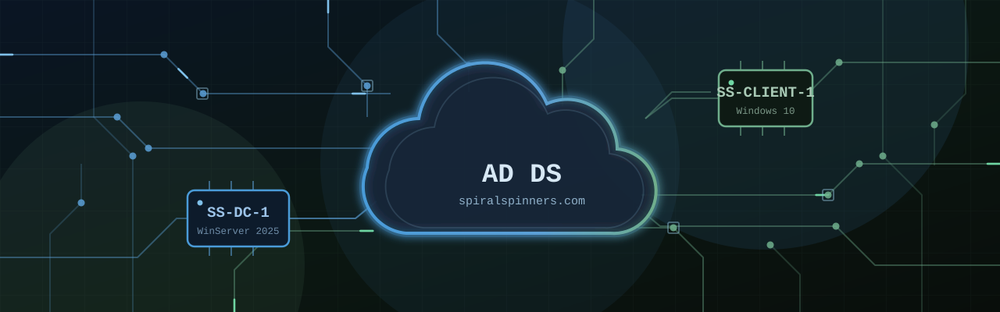

Deploying & Administering Active Directory in Azure
Problem
A growing game studio needs a real corporate network — central logins, shared drives, and access control — without owning a single physical server.
Solution
Built the environment on Azure VMs: a Windows Server 2025 domain controller and a Windows 10 client on a private virtual network, with PowerShell bulk user provisioning, Group Policy lockout rules, and security-group-gated file shares.
Result
A working spiralspinners.com domain, plus live reps of the tickets help desks handle daily — lockouts, password resets, and permission requests — documented in three video walkthroughs.